Query Processing and Optimization
Boston University
Overview
Recall that a DBMS consists of the
- logical layer (the relational model and relational algebra) and
- storage engine (the physical layer, with files, indexes, and hashing)
Query processing and optimization is the part of the DBMS that sits between these two layers. It is responsible for taking a user query (in SQL) and executing it efficiently on the contents of the database.

Lecture Outline
- Part 1: Query Processing (how a single plan is executed)
- basic steps in query processing
- measures of query cost
- some algorithms for selection and joins
- evaluating whole expressions: materialization vs. pipelining
- Part 2: Query Optimization (how the best plan is chosen)
- equivalent expressions and equivalence rules
- estimating statistics and result sizes
- choosing a join order: cost-based and heuristic optimization
- Running examples: the movie database from L03/L04 (
data/movie.sqlite)- Movie(id, name, year, rating, runtime, genre, earnings_rank)
- Person(id, name, dob, pob)
- Actor(actor_id, movie_id) Director(director_id, movie_id) Oscar(…)
Part 1: Query Processing
Basic Steps in Query Processing
Query processing refers to the range of activities involved in extracting data from a database.
- 1. Parsing and translation
- check syntax, verify relations
- translate SQL into an internal form: a relational-algebra expression
- 2. Optimization
- a relational-algebra expression can have many equivalent forms
- each operation can be evaluated with different algorithms
- expression + algorithm annotations = evaluation plan (query plan)
- the optimizer picks the plan with the lowest estimated cost
- 3. Evaluation
- the query-execution engine runs the chosen plan and returns the answer
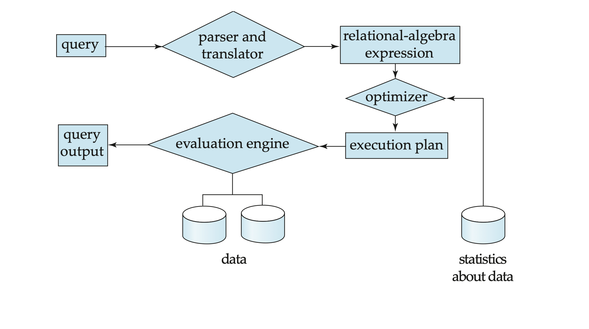
Example Query
Consider the following query on our movie database:
This query can be translated into the following relational-algebra expressions:
- \(\sigma_{runtime < 100}(\pi_{runtime}(\text{Movie}))\)
- \(\pi_{runtime}(\sigma_{runtime < 100}(\text{Movie}))\)
The first expression first projects the runtime attribute and then filters the results, while the second expression first filters the Movie relation and then projects the runtime attribute.
To specify how to evaluate a query, the DBMS needs to provide instructions on how to evaluate each operation in addition to the relational algebra query.
A relational algebra operation annotated with instructions is called an evaluation primitive.
A sequence of primitive operations that can be used to evaluate a query is a query plan.
Query Cost
Each query plan has an associated cost.
Rather than users specifying how to evaluate a query, the DBMS chooses the plan with the lowest cost.
Determining the best plan is query optimization.
Recall (L06): How Data Is Stored
- A relation is stored as a file of blocks on disk.
- a block (typically 4K–8K) is the smallest unit the disk can read or write
- Disk I/O is the expensive operation.
- in the time it takes to read one block, the CPU can execute millions of instructions
- Notation we’ll use all lecture, for a relation r:
- nr = number of records
- br = number of blocks
- fr = records per block (blocking factor)
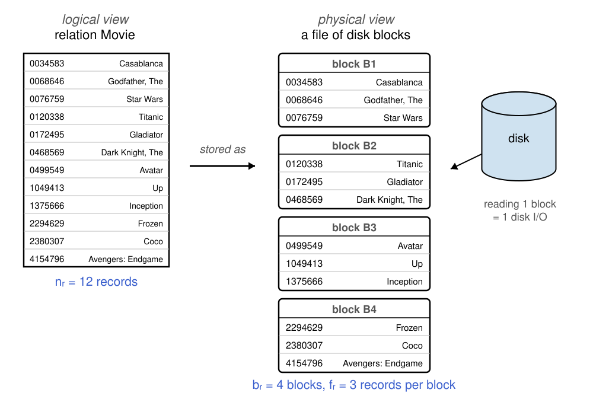
- Consequence: we measure the cost of an algorithm by how many blocks it touches — keep this picture in mind for every slide that follows.
Recall (L07): Indexes and B+Trees
- A relation may also have index structures:
- one clustering (primary) index — stores the full records (usually organized by the primary key)
- any number of secondary indices — store (key, pointer) pairs, so reaching a record takes a second lookup
- B+trees (order m) are the standard index:
- internal nodes hold m to 2m keys → m+1 to 2m+1 children; each node is one page/block
- perfect balance: search = follow one root-to-leaf path
- tree height ≤ logm n, and # of nodes accessed ≤ height + 1
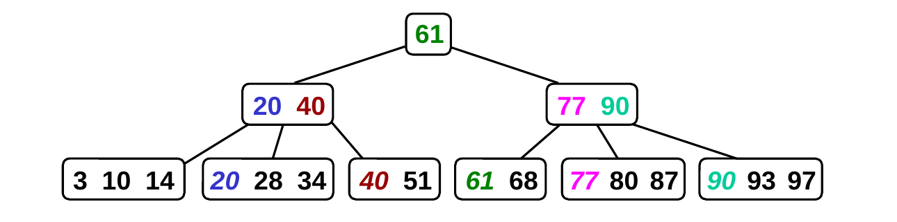
- With order m = 100, every internal node has ≥ 101 children — two levels below the root already reach over 10,000 leaves.
- hundreds of thousands of records, any of them ≤ 3 block reads away
- An index turns “scan everything” into “follow one short path.”
Measures of Query Cost
- Many factors: disk access, CPU, (network in distributed DBs)
- disk access is typically dominant → we count disk I/O
- Cost of an operation that transfers b blocks with S seeks:
- cost = b × tT + S × tS
- tT = time per block transfer; tS = time per seek
- Simplifications we’ll make:
- often just count block transfers (and sometimes seeks)
- worst-case estimates: assume only the memory the algorithm needs
Measures of Query Cost: Example
- Typical magnetic-disk values: tS = 4 ms per seek, tT = 0.1 ms per block.
- Read 100 consecutive blocks (one seek, then sequential transfers):
- cost = 100 × 0.1 + 1 × 4 = 14 ms
- Read 100 scattered blocks (every read needs its own seek):
- cost = 100 × 0.1 + 100 × 4 = 410 ms — ~30× slower!
- Two lessons for everything that follows:
- fewer block reads is better…
- …but sequential reads (scans) are much cheaper per block than random reads (index probes) — so counting transfers alone slightly flatters indexes
Selection: the Two Basic Strategies
Every selection algorithm is built from two ingredients:
- Scan the file (linear search)
- read every block; works for any condition, with no index
- Walk an index
- follow one root-to-leaf path; works only when a suitable index exists
- The full menu combines them — which combination applies depends on the index (clustering or secondary?) and the condition (equality on a key? on a non-key? a range?):
- clustering index, equality on a non-key → walk, then read the run of consecutive matching blocks
- secondary index, equality → walk, then chase one pointer per match (can be expensive!)
- comparisons like σyear≤1970 → walk to the boundary, then scan from there
- We’ll work through the two base cases carefully — everything else is a combination of them.
Selection by Scanning the File
Running example: a toy instance of Movie, with nr = 12 records, fr = 3 records per block → br = 4 blocks.
Linear search is the plan of last resort — it always works: no index needed, any condition, any file order.
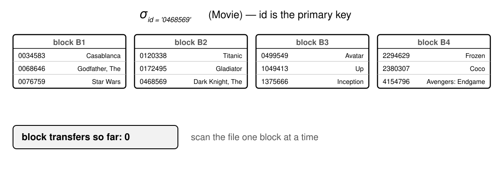
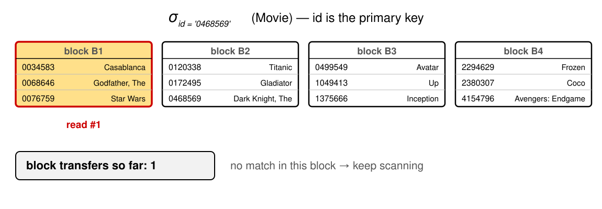
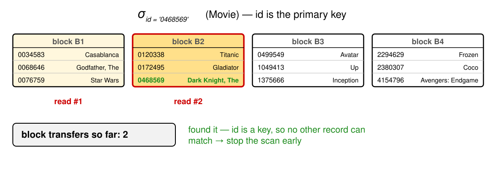
Selection by Scanning: Cost
- Worst case: read the whole file
- cost = br block transfers + 1 seek (the blocks are consecutive — one seek suffices)
- Equality on a key attribute (like
id): stop at the first match- average cost ≈ br / 2
- Equality on a non-key attribute (e.g.,
year,genre): matches can be anywhere- must read all br blocks, even if we find a match early
- At toy scale this is fine. At real scale it hurts:
| br | scan average (key) | |
|---|---|---|
| toy Movie | 4 | 2 reads |
Movie in movie.sqlite (755 records) |
32 | 16 reads |
| Person at streaming-service scale (100,000) | 2,000 | 1,000 reads |
Selection via the Clustering Index
Now use the clustering B+tree on id — and remember from L07 what clustering means: the leaves store the full records. The bottom level of the tree is the file.
Search walks one path: root → leaf — and the record is in the leaf when we arrive.
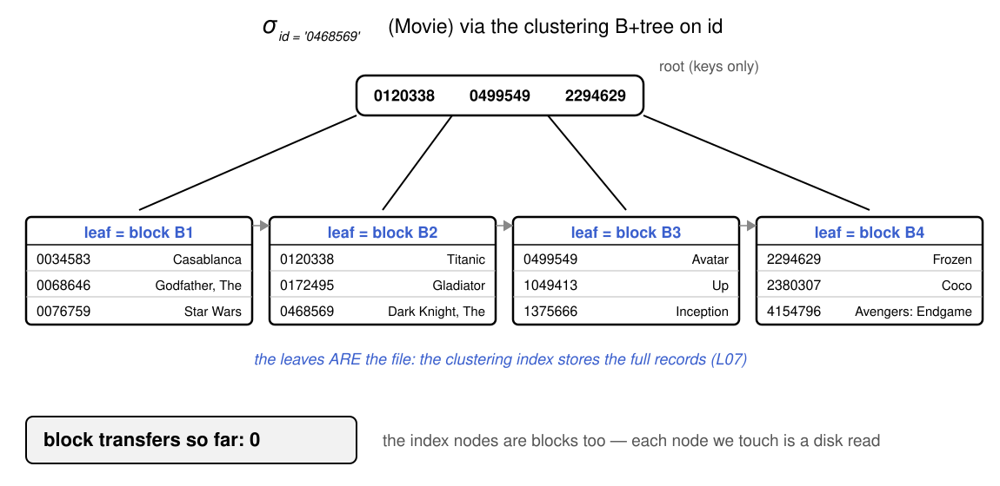
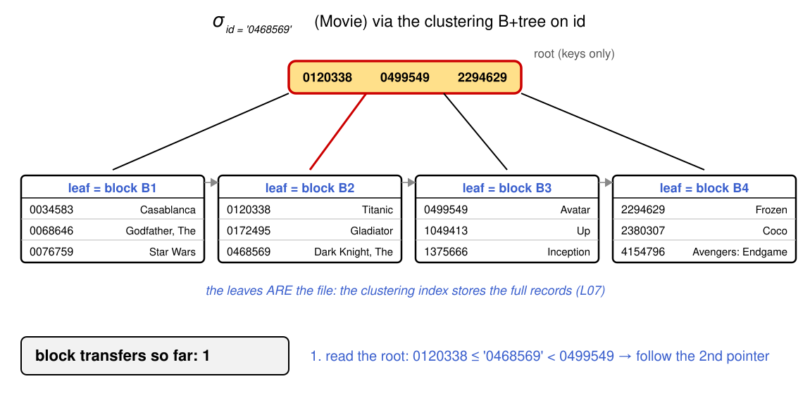
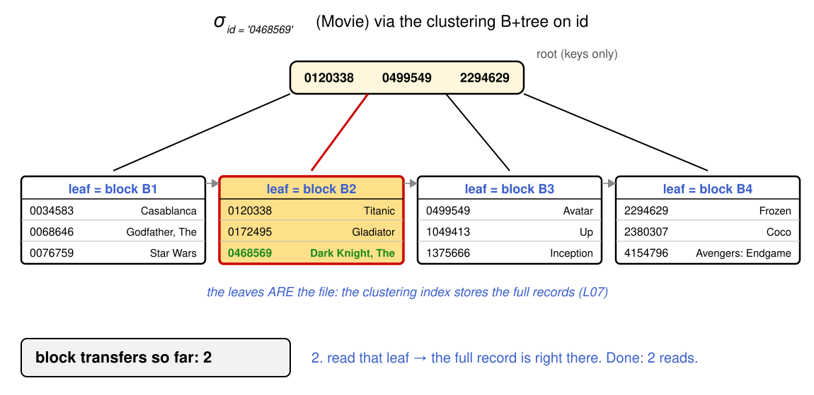
Index Lookup: Cost — and When It Wins
- Cost = # of nodes on the root-to-leaf path = height + 1 block transfers (L07)
- each one is a random read: (height + 1) × (tT + tS)
- On our toy file the index didn’t help: 2 reads vs. an average of 2 for the scan!
- index structures have overhead; on 4 blocks there’s nothing to save
- But the index cost grows with tree height (≤ logm nr), while the scan grows with file size:
| br | scan average (key) | index (height + 1) | |
|---|---|---|---|
| toy Movie | 4 | 2 | 2 |
Movie in movie.sqlite (755 records) |
32 | 16 | 2 |
| Person at streaming scale (100,000) | 2,000 | 1,000 | 3 |
- This tradeoff — which plan wins depends on the data — is exactly why the optimizer needs statistics (Part 2).
Which plan — and what cost?
Imagine Movie at streaming-service scale: br = 1,000 blocks, with a clustering B+tree on id of height 2. For the query σname=‘Casablanca’(Movie) (no index on name), the best available strategy costs:
A. 3 block transfers
B. about 500 block transfers
C. 1,000 block transfers ← correct — linear search; name has no index, so we must scan every block
D. 2,000 block transfers
- The B+tree on id is useless here — an index only helps for conditions on its search key.
- And since name is not a key, we can’t even stop at the first match.
Developing a Plan for a Join
- Let’s follow the optimizer’s problem for one concrete query — who acted in what:
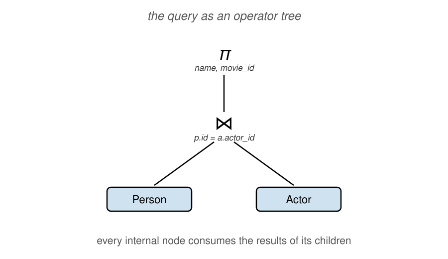
- Translated to relational algebra:
- \(\pi_{name,\, movie\_id}(\text{Person} \bowtie \text{Actor})\)
- To turn this expression into a plan, the DBMS must decide, for the ⋈ node:
- which algorithm evaluates it
- which input is outer, which is inner
- whether to use an index
- We’ll price out the candidates on two scales:
- a toy instance we can trace by hand
- a scaled-up instance, the size a streaming service might manage
The Data, at Two Scales
- Toy instance (used in the traces on the next slides; short ids for readability):
| records nr | blocks br | contents | |
|---|---|---|---|
| Person | 4 | 2 | (101, Hanks), (102, Streep), (103, Pacino), (104, Bullock) |
| Actor | 6 | 3 | (101, 502), (101, 509), (102, 503), (103, 502), (103, 507), (104, 509) |
- Scaled-up instance (a streaming service’s catalog; fr = 50 Person records or 200 Actor records per block):
| records nr | blocks br | |
|---|---|---|
| Person | 100,000 | 2,000 |
| Actor | 500,000 | 2,500 |
- Our
movie.sqlite(2,698 people, 3,790 actor rows) sits in between — and at the end of the lecture we’ll watch SQLite make these same choices on it.
Candidate 1: Nested-Loop Join
- The brute-force algorithm — like the linear scan, it always works (any join condition, no index needed):
- In block terms: read each outer block once; for every outer tuple, re-scan all of the inner relation.
- (the basic algorithm doesn’t exploit the fact that id is a key — it just keeps scanning)
Nested-Loop Join: Trace
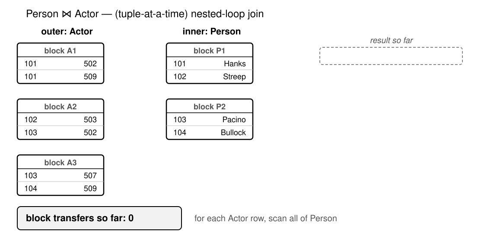
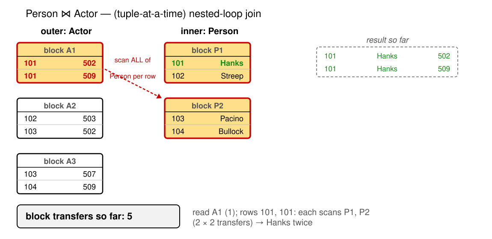
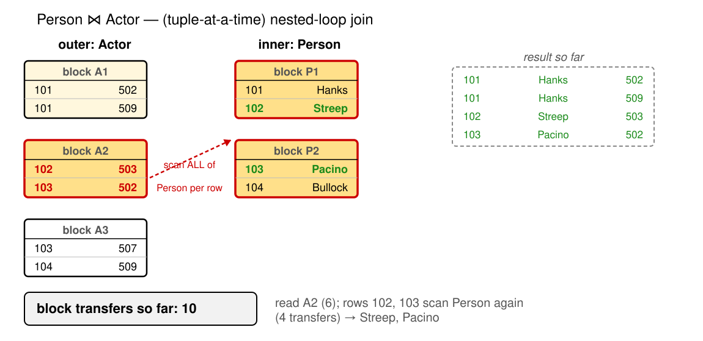
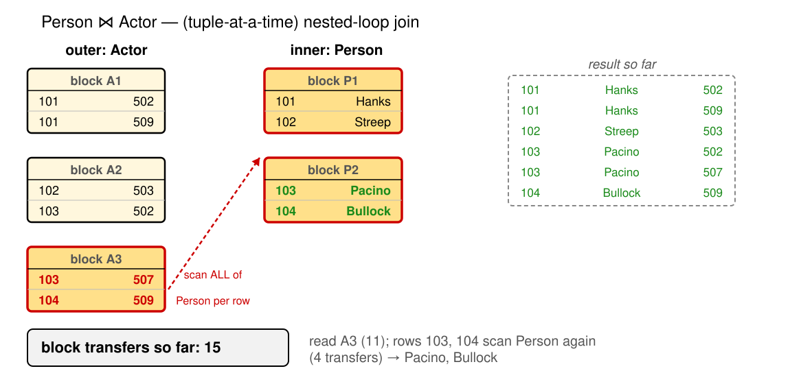
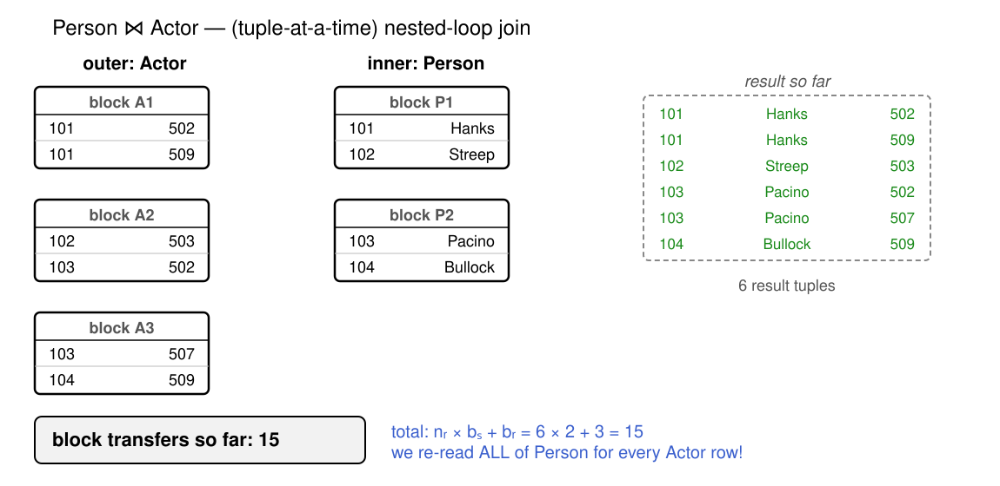
Nested-Loop Join: Cost
- Worst case (only one block of memory per relation):
- nr × bs + br block transfers (r = outer, s = inner)
- At streaming scale:
- Actor outer: 500,000 × 2,000 + 2,500 = 1,000,002,500 transfers
- Person outer: 100,000 × 2,500 + 2,000 = 250,002,000 transfers
- Best case: the inner relation fits entirely in memory
- read each relation once: br + bs = 4,500 transfers
- Block nested-loop join: pair up blocks instead of tuples
- worst case br × bs + br = 2,000 × 2,500 + 2,000 = 5,002,000 transfers
- use the smaller relation as the outer relation
- Same answer, same result — a 200× cost difference just from how we loop.
Candidate 2: Indexed Nested-Loop Join
- Look back at the trace: for each Actor row we re-scanned all of Person — just to find the one record with a matching key.
- L07 gave us a better tool for exactly this — and the movie database already has it: the clustering B+tree on Person(id).
- Idea: keep the outer loop, but replace each inner scan with an index walk:
- Requirements:
- an index on the inner relation’s join attribute
- a join condition that is an equality — like all our natural joins from L02
Indexed Nested-Loop Join: Trace
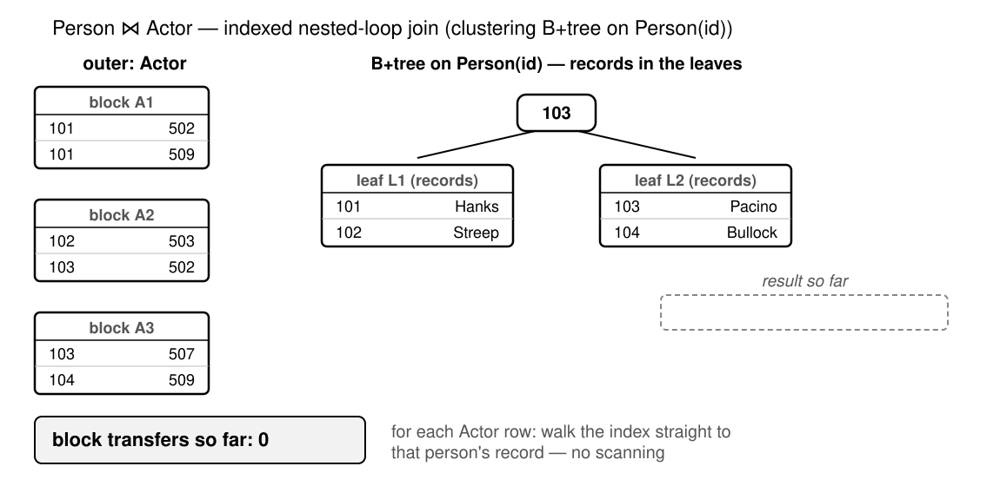
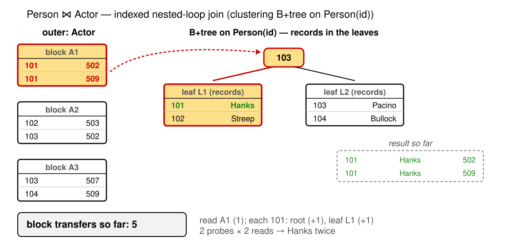
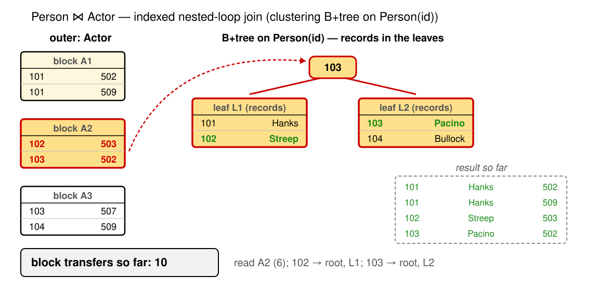
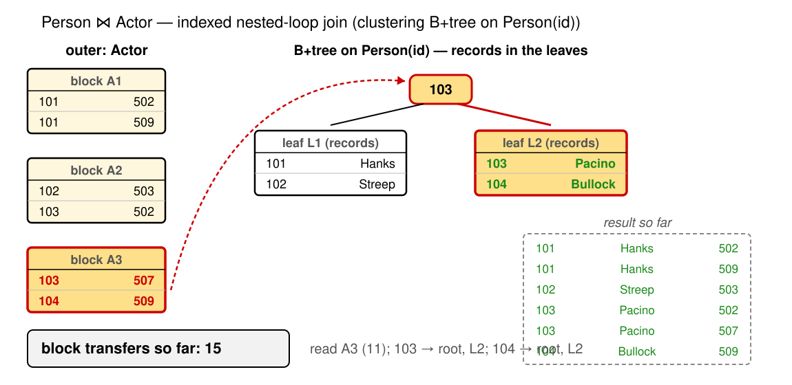
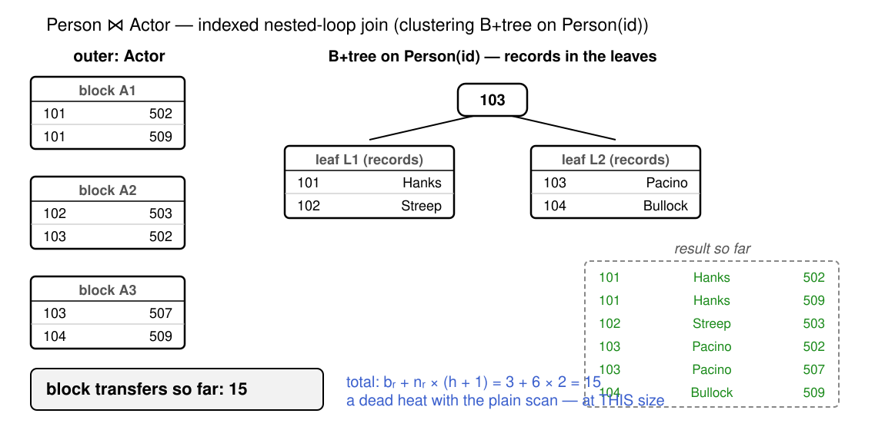
Indexed Nested-Loop Join: Cost
- Cost = br + nr × c
- c = cost of one index lookup = height + 1 (the same formula as before)
- c is an estimate — if a key’s matches spanned several leaves, a probe would cost more
- On the toy instance: 3 + 6 × 2 = 15 transfers — a dead heat with the plain scan (15)!
- just like selection: on tiny data, index overhead doesn’t pay
- At streaming scale (B+tree on Person(id) has height 2, so c = 3):
- 2,500 + 500,000 × 3 = 1,502,500 transfers
| plan | block transfers |
|---|---|
| NLJ, Actor outer | 1,000,002,500 |
| NLJ, Person outer | 250,002,000 |
| block NLJ, Person outer | 5,002,000 |
| indexed NLJ, clustering index on Person(id) | 1,502,500 |
The Winning Plan
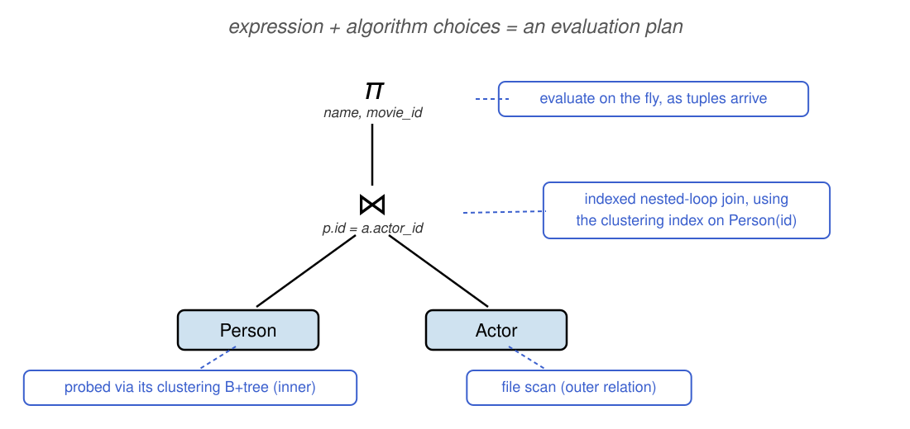
- The optimizer compares the estimated costs and annotates the tree with the cheapest choices.
- Notice how much it needed to know:
- sizes nr, br of both relations
- which indexes exist, and their heights
- which relation to put on the outside
- Gathering those statistics and searching the space of alternatives is query optimization — Part 2.
What if Actor had an index too?
Suppose there were also a B+tree on Actor(actor_id) with lookup cost c = 3. Scanning Person as the outer (100,000 tuples) and probing Actor would cost br + nr × c =
A. 2,500 + 500,000 × 3 = 1,502,500 transfers
B. 2,000 + 100,000 × 3 = 302,000 transfers ← correct — Person is now the outer: br = 2,000, nr = 100,000
C. 2,000 + 500,000 × 3 = 1,502,000 transfers
D. 2,500 + 100,000 × 3 = 302,500 transfers
- Five times better — fewer outer tuples means fewer index probes.
- The best plan depends on which indexes exist and which relation drives the loop. In
movie.sqliteonly the Person index exists — which is why (as we’ll see) SQLite scans Actor.
Join Operation: Merge Join and Hash Join
- Merge join (sort-merge join)
- sort both inputs on the join attributes, then merge
- cost br + bs block transfers (plus the cost of sorting)
- only for equality-based joins
- Hash join
- partition both relations with a hash function on the join attributes
- join matching partitions: build in-memory hash table, probe with the other relation
- cost ≈ 3(br + bs) if no recursive partitioning
- only for equality-based joins
- Which join algorithm wins depends on sizes, memory, indexes, sortedness
Other Operations
- Duplicate elimination: via sorting or hashing
- Projection: drop attributes, then eliminate duplicates
- Aggregation / grouping: like duplicate elimination (sort or hash on grouping attributes; combine partial aggregates)
- Set operations (∪, ∩, −): variants of merge join or hash join
- Outer joins: modified join algorithms that pad non-matching tuples with nulls
Evaluating Expressions
So far we’ve priced single operations. But a query is a tree of operations — how do we run the whole tree?
Running example, one selection richer than before:
- \(\pi_{name,\, actor\_id}\big(\sigma_{year = 2008}(\text{Movie}) \bowtie \text{Actor}\big)\)
Two strategies:
- materialization — evaluate one operation at a time, saving intermediate results
- pipelining — evaluate several operations simultaneously, streaming tuples between them
Materialization
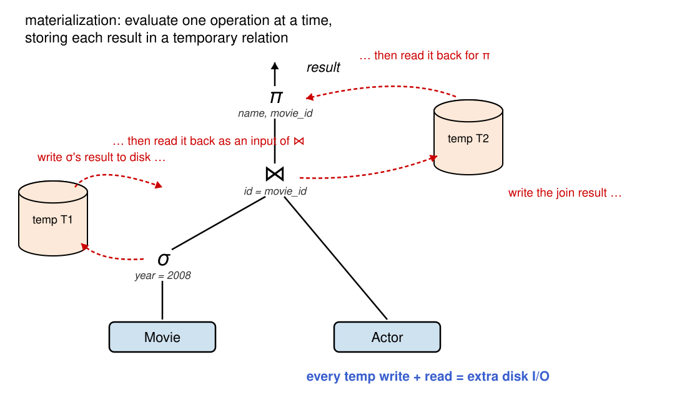
- Evaluate the tree bottom-up, one operation at a time:
- run σ to completion → write temp T1
- join T1 with Actor → write temp T2
- run π over T2 → result
- + always applicable — any operator, any memory budget
- – cost of the plan is more than the sum of the operator costs:
- each temp is written and re-read: extra 2 × bT transfers per temp (roughly)
- for a big intermediate result, the temp I/O can dominate everything
Pipelining
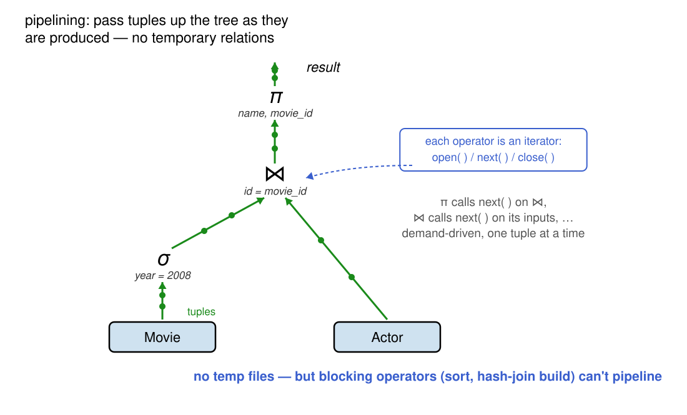
- Pass tuples from child to parent as they are produced — the operations run simultaneously.
- Implemented with the iterator interface: every operator provides open() / next() / close()
- demand-driven: the root calls next() on its children, which call next() on theirs, …
- each next() returns one tuple
- + no temporary relations — the temp I/O disappears
- + first results appear early (nice for
LIMIT, or for a user watching)
Pipelining: Not Always Possible
- Some operators are blocking: they must consume all of their input before producing their first output tuple.
- sorting (e.g., for
ORDER BY): can’t emit the smallest tuple until it has seen every tuple - hash join: must finish building the hash table on one input before probing
- grouped aggregation: a group’s total isn’t final until all input is seen
- sorting (e.g., for
- A blocking operator cuts the pipeline: everything below it runs to completion first (materializing its output, at least logically).
- Our example plan pipelines end-to-end: σ, indexed NLJ, and π are all non-blocking.
- this is part of why the optimizer liked indexed NLJ!
Which of these operator trees can be fully pipelined?
A. π over merge-join (inputs unsorted)
B. σ over indexed nested-loop join ← correct — neither operator needs to see its whole input first
C. ORDER BY over σ
D. grouped SUM over a file scan
Part 2: Query Optimization
Overview
The same query → many equivalent relational-algebra expressions → many evaluation plans with wildly different costs
Cost differences can be orders of magnitude
Steps in cost-based optimization:
- 1. generate equivalent expressions using equivalence rules
- 2. annotate them with algorithms to get alternative plans
- 3. estimate each plan’s cost using statistics, choose the cheapest
- We’ll take the three steps in reverse order of novelty: we’ve already seen step 3 in action — that was Part 1’s cost arithmetic. What’s new is generating the alternatives (steps 1–2) and the statistics that feed step 3.
One Query, Many Plans
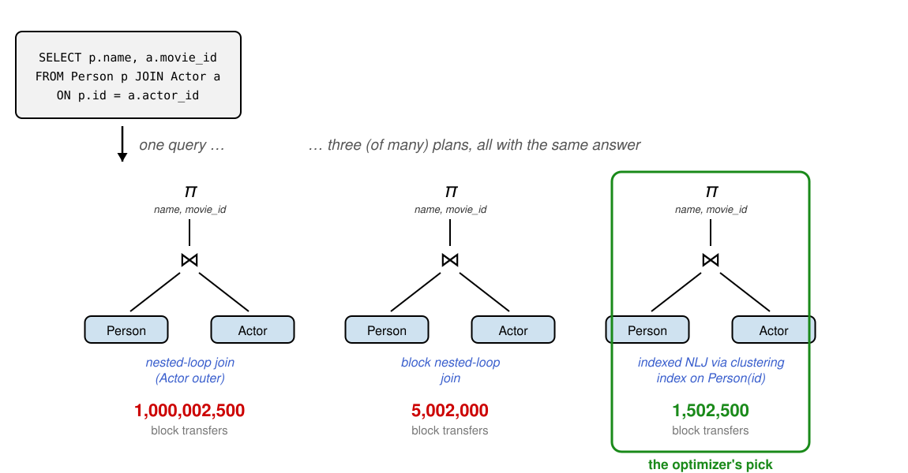
- This is just the algorithm dimension, for one fixed expression — a 650× spread on our two-relation query.
- Add the expression dimension (reordered joins, pushed-down selections) and multi-relation queries, and the spread grows further still.
Equivalence Rules
Two expressions are equivalent if they produce the same result on every legal database instance
Highlights (there are ~16 such rules):
- conjunctive selections can be split: σθ1∧θ2(E) = σθ1(σθ2(E))
- selection is commutative
- joins are commutative and associative — the basis of join reordering
- selection distributes over join (push selections down)
- projection distributes over join (push projections down)
- rules for set operations and outer joins (with caveats — e.g., outer joins are not associative)
- Each rule is a rewrite the optimizer may apply in either direction — the rules define the space of candidate expressions.
Two Rules, Pictured
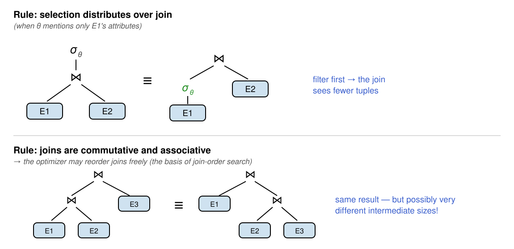
Transformation Example: Step by Step
- Let’s transform one query the way an optimizer would — the actors of 2008 movies (we’ll meet this exact query again in SQLite):
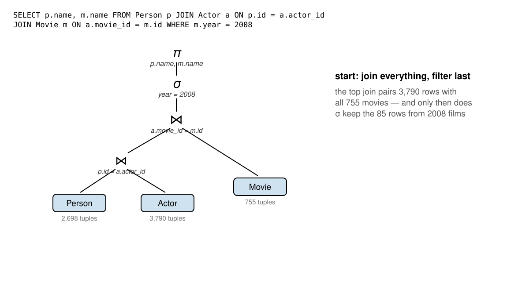
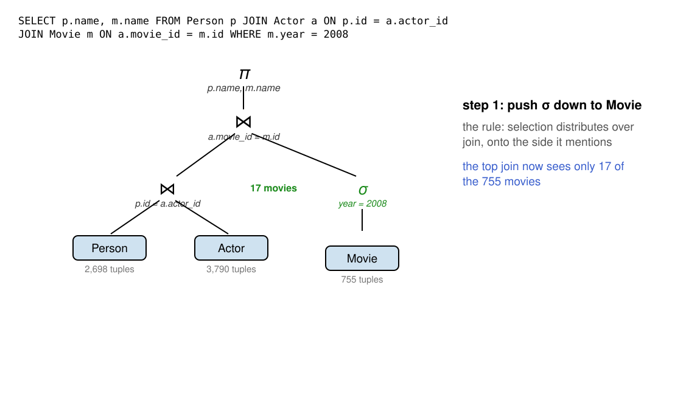
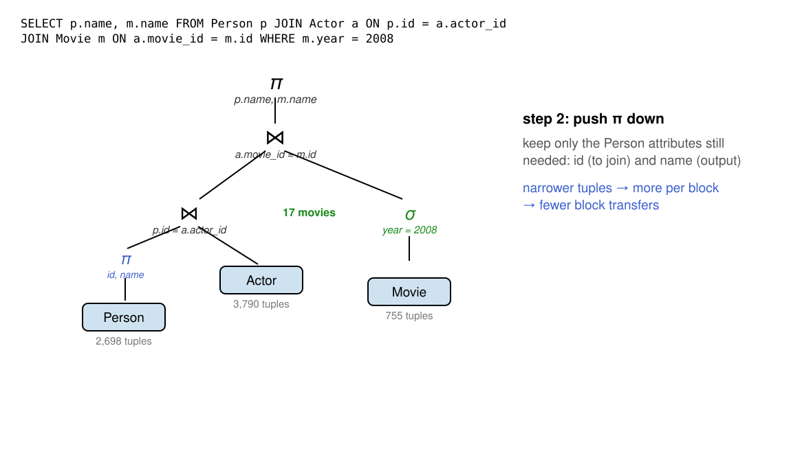
Transformation Example: the Payoff
- Same answer, before and after — but compare what the top join has to do:
| movies entering the top join | |
|---|---|
| original expression | all 755 |
| after pushing σ down | 17 |
- And a smaller join input doesn’t just mean fewer comparisons:
- 17 Movie tuples fit in a single block → that side of the join lives entirely in memory
- But wait — the optimizer chooses a plan before running anything. How did it know the σ would keep 17 movies and not 700?
- it didn’t — it estimated the size, from statistics
- that’s the next stop
Statistics and Size Estimation
- The catalog stores, for each relation r:
- nr (number of tuples), br (number of blocks), lr (tuple size), fr (blocking factor)
- V(A, r): number of distinct values of attribute A
- Selection size estimates
- equality σA=v: nr / V(A,r) tuples
- ranges: use min/max, or histograms for better accuracy
- Join size estimates
- A is a key of r: at most ns tuples
- A a foreign key of s referencing r: exactly ns tuples
- general case: nr × ns / max(V(A,r), V(A,s))
Size Estimation, Pictured
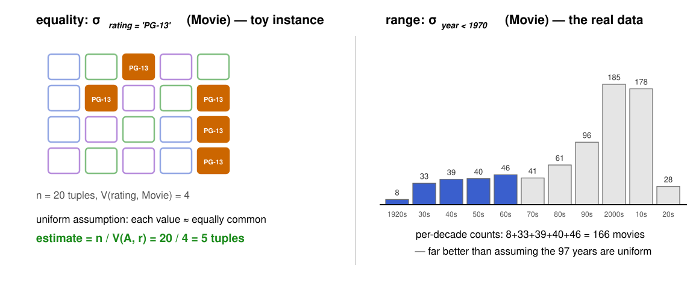
- Estimates are heuristics, not guarantees — if PG-13 is far more common than G (it is!), n/V misjudges both.
- Wrong estimates → wrong plan choices; this is a leading cause of real-world slow queries. (Real systems:
ANALYZE, auto-collected histograms.)
Estimate the size
Movie has nr = 755 tuples and V(year, Movie) = 97 distinct years. The optimizer’s estimate for σyear=2008(Movie) is:
A. 97 tuples
B. about 8 tuples ← correct — nr / V(A, r) = 755 / 97 ≈ 7.8
C. 17 tuples
D. 755 tuples
- The actual answer is 17 — recent years have far more movies than the 1920s, so the uniform assumption undercounts by 2×.
- Close enough to rank the plans correctly here — but this is exactly the kind of error that can flip a plan choice, and why real systems collect histograms.
Choosing a Join Order
- With n relations there are (2(n−1))! / (n−1)! join orders
- n = 7 → 665,280 orders; n = 10 → over 176 billion
- Dynamic programming: find the best plan for every subset of relations, reusing sub-plans
- “interesting sort orders” matter (e.g., merge join leaves output sorted)
- many optimizers restrict to left-deep join trees
- Heuristic optimization (when full search is too costly):
- perform selections and projections as early as possible
- avoid Cartesian products
- join the most restrictive relations first
Join Trees: Left-Deep vs. Bushy
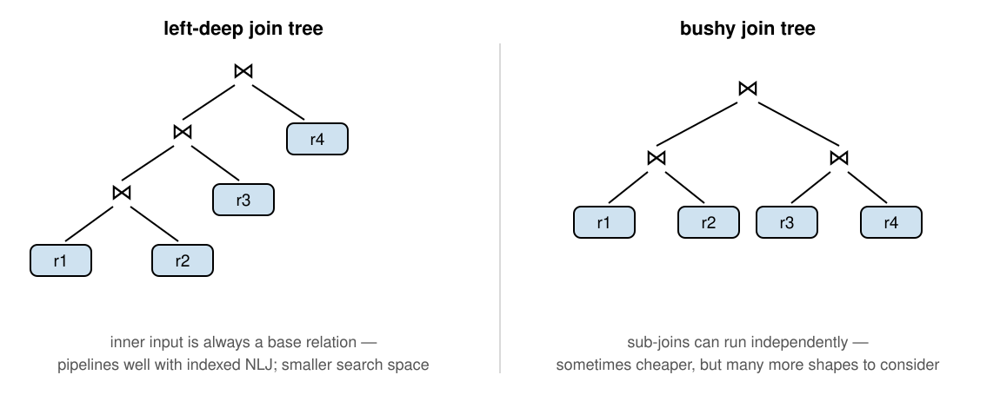
- Restricting to left-deep trees shrinks the search space from (2(n−1))!/(n−1)! to n! — and every join can use a base relation (with its indexes!) as the inner input, exactly like our indexed NLJ plan.
Seeing the Optimizer at Work
The Optimizer Is One Query Away
- Everything in this lecture happens automatically, on every query you run — and every real DBMS will show you its decision:
- PostgreSQL / MySQL:
EXPLAIN(andEXPLAIN ANALYZE) - SQLite:
EXPLAIN QUERY PLAN
- PostgreSQL / MySQL:
- We can inspect plans from Python, using our movie database (
data/movie.sqlite):
- Each
PRIMARY KEYgets an automatic index (sqlite_autoindex_...).- careful: SQLite stores the table itself in rowid order, so this autoindex is a secondary index (id → rowid) — finding a row takes an index walk plus one more lookup: L07’s two-lookup pattern, live
Reading a Plan: Selection
- Equality on the primary key:
- Equality on a non-indexed attribute:
- You already know these two strategies:
SCAN= linear search •SEARCH ... USING INDEX= an index walk
Changing the Plan: CREATE INDEX
- Give the optimizer a new physical option…
- …and it changes its choice: same query, same answer, new plan.
CREATE INDEXis a physical-layer change — SQL never mentions it; only the cost changes
- The index also changes other queries. Remember
USE TEMP B-TREE(that’s an on-the-fly sort — a blocking operator!):
- the index provides the sorted order — the sort disappears entirely
Reading a Plan: a Join
- The actors of 2008 movies — the very query from our transformation example (before adding any indexes of our own):
- Read it top-down as nested loops, outermost first:
- for each Actor row (scanned) → probe Movie by id → probe Person by id
- This is our indexed nested-loop join — scan the outer, probe Person through its index — in a left-deep tree, exactly the plan we costed by hand.
Changing the Join Order
- Only 17 of the 755 movies are from 2008 — the current plan scans all 3,790 Actor rows anyway. Give the optimizer what it’s missing:
- The join order flipped: start from the ≈17 matching movies, probe Actor per movie, probe Person per actor.
- “join the most restrictive relation first” — the heuristic from a few slides ago, chosen automatically
- and the σ pushdown from the transformation example is realized here as “apply the year filter first”
- And the statistics?
cur.execute("ANALYZE")collects them (row counts and index selectivities, stored insqlite_stat1) — that’s the catalog from Part 2, live.
- Try it yourself: run these against
data/movie.sqlite, then try your own queries — predict the plan before you print it.
Wrap-Up
- Processing: every operator has several algorithms, each with a cost formula
- selection: scan the file vs. walk an index — the index wins once the data is big
- joins: nested loops vs. index probes on the inner — a 650× spread on the same query
- Whole expressions: materialize (always works, pays temp I/O) vs. pipeline (cheap, but blocking operators cut it)
- Optimization: equivalence rules generate the options; statistics pick the winner
- The biggest lever is usually join order and pushing selections down
- All of it is one
EXPLAIN QUERY PLANaway — on any SQLite database, from Python - Practice: join-cost problems in the homework and discussion sections — trace tiny joins and count the operations yourself